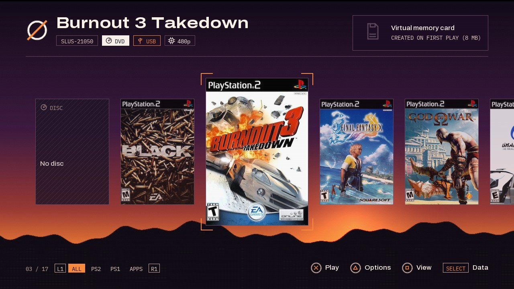

A game launcher that runs on the PlayStation 2 and does its own homework.
Everything TEa.G3 can do, and how to turn it on. You need a PS2 that runs homebrew (FreeMcBoot or similar) and a USB drive.
Download
The USB drive
Copy the zip's contents to the root of the drive, put your ISOs in DVD/ (CD games in CD/) and start mass0:/TEa.G3.ELF from uLaunchELF. The setup wizard opens on the first boot.
USB root ├── TEa.G3.ELF ├── neutrino/ the loader, with TEa.G3's in-game menu and achievements agent ├── DVD/ PS2 DVD ISOs ├── CD/ PS2 CD ISOs ├── POPS/ PS1 games (POPStarter .VCD), optional ├── APPS/ homebrew .ELF files, optional ├── covers/ written by TEa.G3: the covers it downloads └── tea_g3/ written by TEa.G3: config.ini, juegos.ini, estado.ini
FAT32 cannot hold files over 4 GB: format the drive as exFAT for big ISOs. Virtual memory cards live in VMC/ on the game's own device.
Buttons

| ← → ↑ ↓ | Move through the library |
| L1 / R1 | Filter: all, PS2, PS1, apps |
| □ | Change view: carousel, grid, list |
| △ | Per-game options: video mode, compatibility, memory card |
| ○ | The game's achievements, when it has a set |
| ✕ | Play |
| START | The setup wizard |
| SELECT | Status: each game source (games found, or why it failed), the network, frame times |
| L2 + R2 | Switch the menu between 720p and 480i for a CRT TV. It works blind, and is remembered |
config.ini
TEa.G3 writes mass0:/tea_g3/config.ini on its first boot, and the setup wizard (START) edits the main keys for you. Each key is explained in the file. The main ones:
| Section and key | Values | What it does |
|---|---|---|
| [ui] idioma | es, en | Language of the menus and of the file's comments |
| [ui] tema | torres, nuld, cristal, aurora, liquid, onda, orbit, techstep, wireframe, neuro, fosforo, papel, or a folder of tea_g3/themes | The theme (chapter 11) |
| [juegos] origen | usb, hdd, mx4sio, ilink, mmce, udpbd, udpfs | Where to look for games, comma-separated |
| [juegos] servidor | an IP | The home game server (udpfs) |
| [memorycard] modo | juego, compartida, fisica | A virtual card per game, one shared, or the physical one |
| [video] modo | nativo, 480p, 1080i | Video mode of the games |
| [video] pantalla | 720p, 480i | The menu's own output; 480i for a CRT |
| [red] ip | dhcp or an IP | DHCP, or a fixed IP with mascara, puerta and dns |
| [portadas] descargar | si, no | Download missing covers at boot |
| [logros] activos | si, no | RetroAchievements through the xeRAbora client |
| [actualizaciones] buscar | si, no | Look for a new TEa.G3 release at boot |
| [igr] menu | a button combo | The in-game menu's combo; also reiniciar and apagar |
Covers
Plug in the network cable (built in on slim PS2s, the network adapter on fat ones). At boot TEa.G3 downloads the covers it is missing from xlenore/ps2-covers and keeps them on the USB, so later boots work offline.
Your own covers: tools/covers.py in the zip turns PNG or JPG files named by serial (SLUS-21376.png) into the pair of files for mass0:/covers/.
Back from a game
TEa.G3 installs BOOT/TEa.G3.ELF on your memory card, and the setup wizard can set FreeMcBoot to start it (autoboot, a button, or an item in FMCB's menu). Then Restart in the in-game menu (L1+L2+R1+R2+START+SELECT) reboots the console straight into TEa.G3. L1+L2+R1+R2+L3+R3 powers it off.
Per-game options

The card at the top right shows the game's newest save and its 3D icon: from the virtual card, or from the physical one in slot 1 when you choose it here.
Video mode (480p or 1080i, forced), Neutrino's compatibility modes for games that need them, and the memory card: the game's own, the shared one or the physical one. The choices are saved in tea_g3/juegos.ini.
RetroAchievements

- On a PC or server on your network, run the xeRAbora v0.1.0-alpha.9 client and sign in to your RetroAchievements account.
- On the PS2, keep
[logros] activos = si. Leaveservidorempty to find the client on the network, or set its IP. - Games with a set show the achievements tag, and ○ lists them with your progress. Press ✕ any time: TEa.G3 does not wait for the answer.
- While you play, the agent inside the game sends its memory to the client, which unlocks achievements on your profile.
Home game server
Keep your ISOs on a Linux machine and play them over the cable. The zip's server/ folder has everything:
# on the server, with the ISOs in /srv/data/ps2/DVD cp -r server ~/nuld && cd ~/nuld mkdir -p ~/.config/systemd/user && cp *.service ~/.config/systemd/user/ systemctl --user daemon-reload systemctl --user enable --now udpfs nuld-catalog loginctl enable-linger $USER curl http://localhost:18290/catalog # what the PS2 will see
Allow UDP 62966 and TCP 18290 in the firewall. On the PS2: [juegos] origen = usb, udpfs and servidor = <server IP>. Use a cable on both ends: udpfs does not survive WiFi packet loss.
Other sources
At startup TEa.G3 automatically probes the configured sources and scans the game folders; the default configuration enables usb, hdd, mx4sio, ilink, mmce, udpbd, udpfs. Games are listed as each source scan completes; no separate Discover or Show Games action is required. Automatic probing is controlled by [juegos] auto = si (default); set it to no to use only the comma-separated devices in [juegos] origen. hdd covers the internal exFAT disk or HD Loader partitions; mmce and mx4sio share the SIO2 path and cannot be used together. udpbd and catalog-less udpfs need a fixed IP in [red]. TEa.G3 can also run from an MMCE's SD card with no USB drive at all.
A MemCard PRO 2 or SD2PSX switches to the game's own card when a game starts, whatever its source. To save there instead of a virtual card, set the game's memory card to fisica with △.
Updates
With the cable in, TEa.G3 looks for a newer release at boot and says so; START installs it. Every file is checked against a manifest signed with the release key before anything is replaced, and the old files stay as .old.
Upgrading from NULD or ORBIT: the first boot automatically migrates nuld/ (or orbit/) to tea_g3/, preserves settings and theme files, and installs BOOT/TEa.G3.ELF. The legacy BOOT/NULD.ELF entry remains supported.
Themes
Since v1.3 TEa.G3 has twelve themes: START, then Theme, and move left or right. Each one is shown at once behind the panel; Save keeps it. A theme has its own colours, background, loading screen and way of marking the selected game; the layout is the same in all of them.

Make your own
A theme is a folder with a text file and, if you want, a picture. The theme maker builds one in the browser, with a preview; or write it by hand:
mass0:/tea_g3/themes/
└── ocaso/ the folder's name is the theme's key
├── theme.ini name, base and colours
└── fondo.jpg optional background, 1280 x 720 (or fondo.png)
nombre = Ocaso ; the name in the setup panel base = nuld ; the built-in theme it starts from [colores] ; RRGGBB; what you leave out keeps the base's fondo = 0E0714 panel = 1A0F22 fila = 3A2140 borde = 6A4A66 tenue = 5A4458 texto = FFF4E8 texto2 = E8D2C4 etiqueta = C9A9A0 acento = FF8A3C acero = 2A1830 inverso = 0E0714
| Key | Used for |
|---|---|
| base | One of the twelve built-in themes. Yours takes from it the loading screen, the launch screen, what is drawn round the selected cover and, without a picture, the animated background. nuld is the most neutral |
| fondo | The ground where nothing else is drawn |
| panel | Panels, the detail card, the pane behind the list |
| fila | The selected row; the frame of the options that are off |
| borde | 1-px edges and rules |
| tenue | What is off: unchecked options, trophies not earned |
| texto, texto2 | Main and secondary text |
| etiqueta | Small labels: serials, counters, the status line |
| acento | The selection. acento = portada follows the selected cover's colour |
| acero | Quiet fills: options that are on, the empty part of bars |
| inverso | Text drawn on an acento or texto fill |
- The picture takes the place of the base's animated background. Make it 1280 x 720, RGB, under 4 MB, and calm where the text goes (top left, the left half, the bottom edge). The console turns it into 15-bit colour, so film grain becomes dots.
- A theme cannot change positions and sizes, fonts, icons, sounds, or add animations of its own.
- Up to 8 folders are read. If yours does not show up, check that
theme.iniis attea_g3/themes/<name>/on the drive TEa.G3 starts from; a colour that is not six hex digits is ignored.
The full guide and the example folder: docs/themes.md, docs/themes/ocaso.
Game formats and OPL compatibility
Do not confuse a game being discovered with its image being supported by the selected loader. At this revision, PS2 ISO files use the existing Neutrino path, while PS1 games use POPStarter-compatible VCD files in POPS/.
The OPL ZSO/LZ4 source has been added to the repository, but it is not connected to the runtime yet. Neutrino's current core does not decode ZSO. CSO, CHD and generic PS1 containers are not supported by the current TEa.G3 launch path. SMB is also not packaged in the current Neutrino build.
Open the detailed format matrix and OPL feature status. It lists what is present, what is missing, and what tests are required before a format can be marked supported.
Troubleshooting
- No covers: check the cable and
[portadas] descargar = si. The line after the loading screen says which step failed; for "no DNS", set[red] dns = 1.1.1.1. - A source shows no games: SELECT lists every source and why it failed.
- "Achievements: no server": the xeRAbora client did not answer; set its IP in
[logros] servidor. - Black screen with a game: try 480p instead of nativo with △, or a compatibility mode.
- Black screen on a CRT: press L2+R2 together for 480i.
- Logs:
mass0:/launcher.txtrecords each launch.